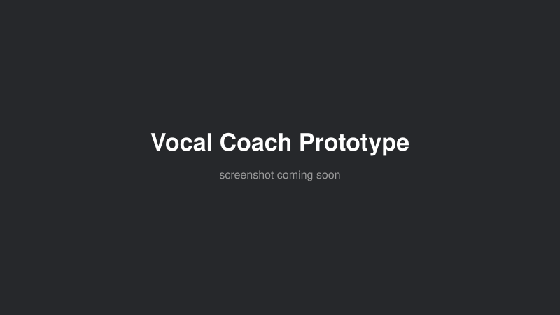

A browser-based real-time singing analysis tool: it captures microphone input via the Web Audio API (echo cancellation and noise suppression disabled to preserve signal fidelity), runs the YIN pitch detection algorithm over 2048-sample frames, and draws a rolling pitch curve — in Hz, note names, and cents — alongside a custom spectral-flux onset detector that marks where each note begins. Built as a foundation for a future "sing-back" exercise mode that compares a performance against a target melody and gives teacher-like feedback on pitch and timing accuracy. Vanilla JavaScript, Vite, HTML5 Canvas — about 250 lines of application code, working in Chrome, Edge and Safari on desktop.
